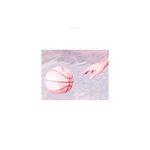

Music Reviews
-

Sarah Neufeld The Ridge
Sarah Neufeld's second solo album is expansive, imaginative in melody and all-in-all, a tour-de-force for the violinist.
Joe Marvilli climbs The Ridge... -
Matt Elliott The Calm Before
While the album isn't really trying anything new in the eclectic virtuoso's oeuvre of dramatic dark folk music, tonal and lyrical optimism continue to peek through its ominous clouds.
Grant Phipps hears a storm... -

Nada Surf You Know Who You Are
The New York power pop stalwarts are back with album number eight, another slick, mostly mid-tempo affair that exhibits their knack for melancholic articulation.
Juan Edgardo Rodriguez reviews... -

Wild Nothing Life of Pause
On Life of Pause, Tatum continues to stray from the C86 and shoegaze influences that were so heavily prevalent on his debut record, Gemini — with somewhat mixed results.
Joseph Moore reviews... -

School of Seven Bells SVIIB
The final School of Seven Bells album is a beautiful, heartfelt tribute to the relationship between two of its founders: Alejandra Deheza and the late Benjamin Curtis.
Joe Marvilli opens his eyes and reviews... -

Santigold 99¢
Santigold returns after a four year hiatus with a third album overflowing with joy and sass and synths.
Luiza Lodder reviews... -

La Sera Music for Listening to Music to
Katy Goodman enlists Ryan Adams to produce her fourth record as La Sera, a more discreetly adult effort that maintains her good ear for vigorous, sharp hooks.
Juan Edgardo Rodriguez reviews... -

Animal Collective Painting With
Animal Collective's tenth studio project, Painting With, does has an unrehearsed quality to it, that of four musicians who are tacking together all these disparate ideas with the intent of cobbling together a cohesive whole.
Juan Edgardo Rodríguez gets lost... -
Sunflower Bean Human Ceremony
With their debut LP, Sunflower Bean march to an offbeat fitting room with armfuls of genres to try on for size, and manage to look good in most of it.
Carl Purvis reviews... -

Porches Pool
Aaron Maine is so sad today.
Juan Edgardo Rodríguez steps inside...